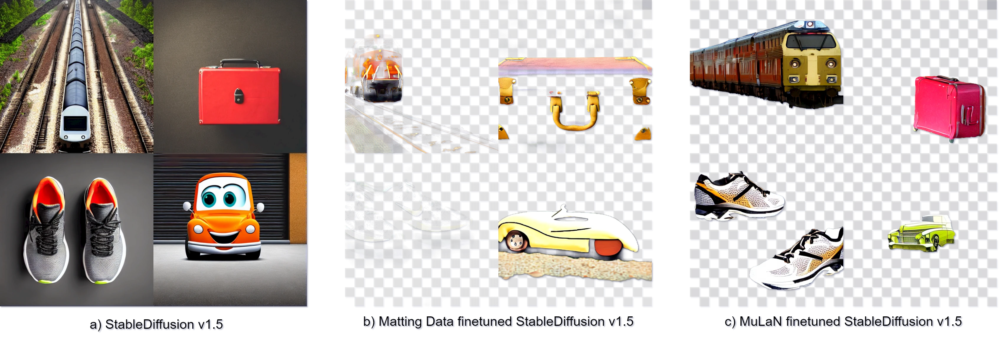

MuLAn-COCO


Text-to-image generation has achieved astonishing results, yet precise spatial controllability and prompt fidelity remain highly challenging. This limitation is typically addressed through cumbersome prompt engineering, scene layout conditioning, or image editing techniques which often require hand drawn masks. Nonetheless, pre-existing works struggle to take advantage of the natural instance-level compositionality of scenes due to the typically flat nature of rasterized RGB output images. Towards adressing this challenge, we introduce MuLAn: a novel dataset comprising over 44K MUlti-Layer ANnotations of RGB images as multi-layer, instance-wise RGBA decompositions, and over 100K instance images. To build MuLAn, we developed a training free pipeline which decomposes a monocular RGB image into a stack of RGBA layers comprising of background and isolated instances. We achieve this through the use of pretrained general-purpose models, and by developing three modules: image decomposition for instance discovery and extraction, instance completion to reconstruct occluded areas, and image re-assembly. We use our pipeline to create MuLAn-COCO and MuLAn-LAION datasets, which contain a variety of image decompositions in terms of style, composition and complexity. With MuLAn, we provide the first photorealistic resource providing instance decomposition and occlusion information for high quality images, opening up new avenues for text-to-image generative AI research. With this, we aim to encourage the development of novel generation and editing technology, in particular layer-wise solutions.

To build MuLAn, we design an image processing pipeline that takes as input a single RGB image and outputs a multi-layer RGBA decom- position of its background and individual object instances. We propose to leverage large-scale pre-trained foundational models to build a robust, general purpose pipeline without incurring any additional model training costs. We separate our decomposition process into three submodules, focusing on 1) instance identification, ordering and extraction, 2) in- stance completion of occluded appearance, and 3) image re-assembly as an RGBA stack. Each submodule is carefully designed to ensure general applicability, high instance and background reconstruction quality, and maximal consistency between input image and composed RGBA stack.
Dataset size: MuLAn is split into two subsets comprising annotations from the MuLAn and LAION datasets. MuLAn-COCO consists of 16,034 images with 40,335 instances, while MuLAn-LAION consists of 28,826 images with 60,934 instances, for a total of 44,862 images with 101,269 instances.
Dataset format : MuLAn decompositions are released as annotations, comprising original image metadata and decomposition results necessary to reconstruct RGBA stacks. Layers are indexed from 0 to N with Layer 0 being the background. All layer annotations comprise the masks required to extract original image content, the inpainted occluded content, and instance transparency Alpha layers for them. Each individual layer has an associated COCO style short caption. For the background (Layer 0), the original image and the recomposed image, we additionally provide LLaVa style long captions. The annotations are organised as follows:
"captioning": {
"llava": LLaVa model details
"blip2": BLIP 2 model details
"clip": CLIP model details
}
"background": {
"llava": Detailed background LLaVa caption
"blip2": COCO style BLIP 2 background caption chosen by CLIP
"original_image_mask": Original image background content mask
"inpainted_delta": Additive inpainted background content
}
"image": {
"llava": Detailed original image LLaVa caption
"blip2": COCO style BLIP 2 original image caption chosen by CLIP.
}
"instances": {
"blip2": COCO style BLIP 2 instance caption chosen by CLIP.
"original_image_mask": Original image instance content mask
"inpainted_delta": Additive inpainted instance content
"instance_alpha": Alpha layer of the inpainted instance
}
We evaluated the potential of MuLAn via two applications. First, training an InstructPix2Pix model to add instances to an image. Using MuLAn, we are able to successfully inpute new instances with substantially better robustness to attribute leakage.
Second, we fine-tuned a stable diffusion model to generate RGBA images using the 100K+ instances in MuLAn. In comparison with the original model, and a model fine-tuned on a collection of matting datasets, we are able to generate better instances and achieve a more accurate understanding of transparency.
